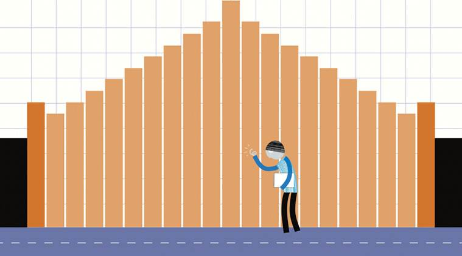

Welcome to periodic census of India!
The decennial Census of India has been conducted 15 times, as of 2011. While it has been undertaken every 10 years, beginning in 1872 under british Viceroy Lord Mayo, the first complete census was taken in 1881.[1] Post 1949, it has been conducted by the Registrar General and Census Commissioner of India under the Ministry of Home Affairs, Government of India. All the censuses since 1951 were conducted under the 1948 Census of India Act. The last census was held in 2011, whilst the next will be held in 2021.
